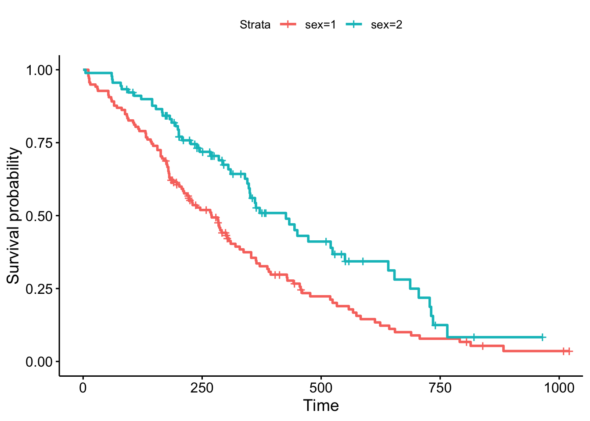
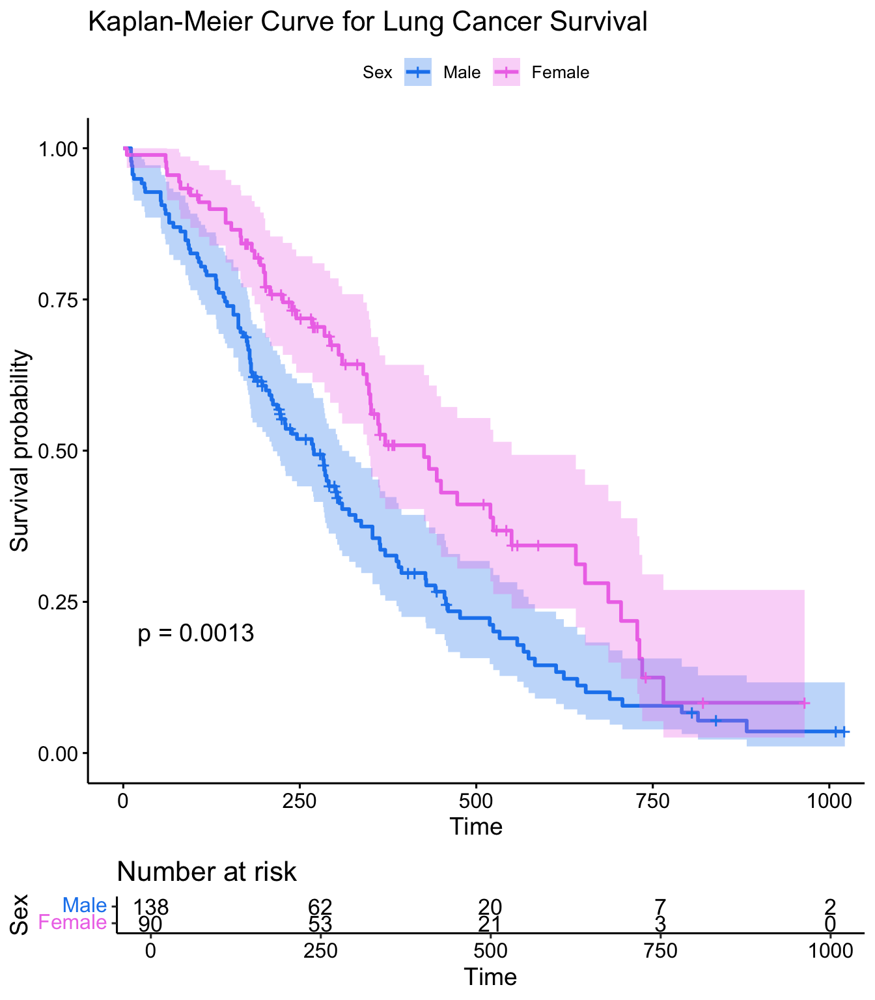
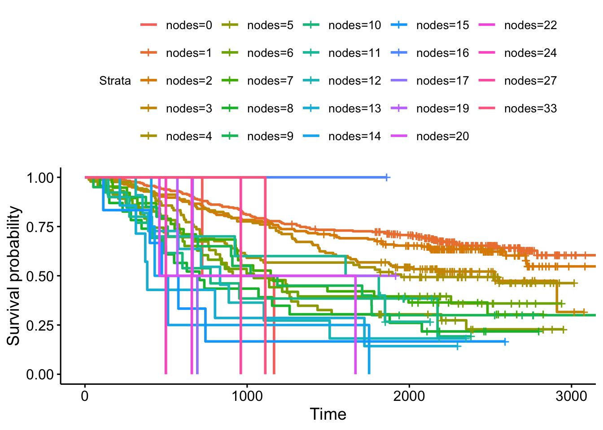
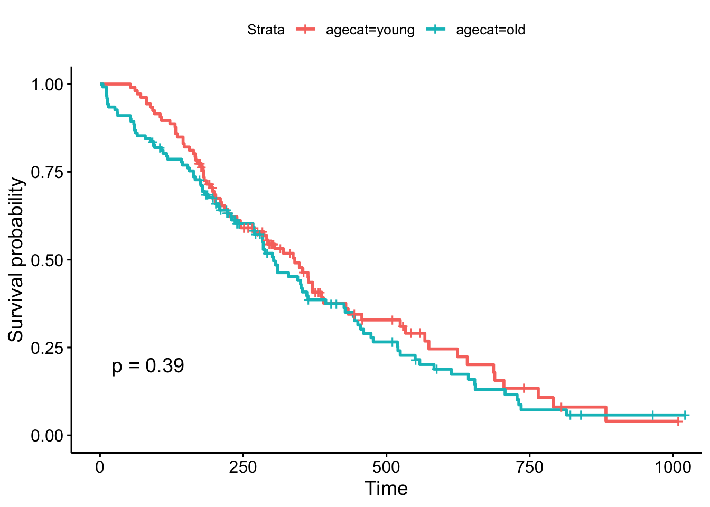
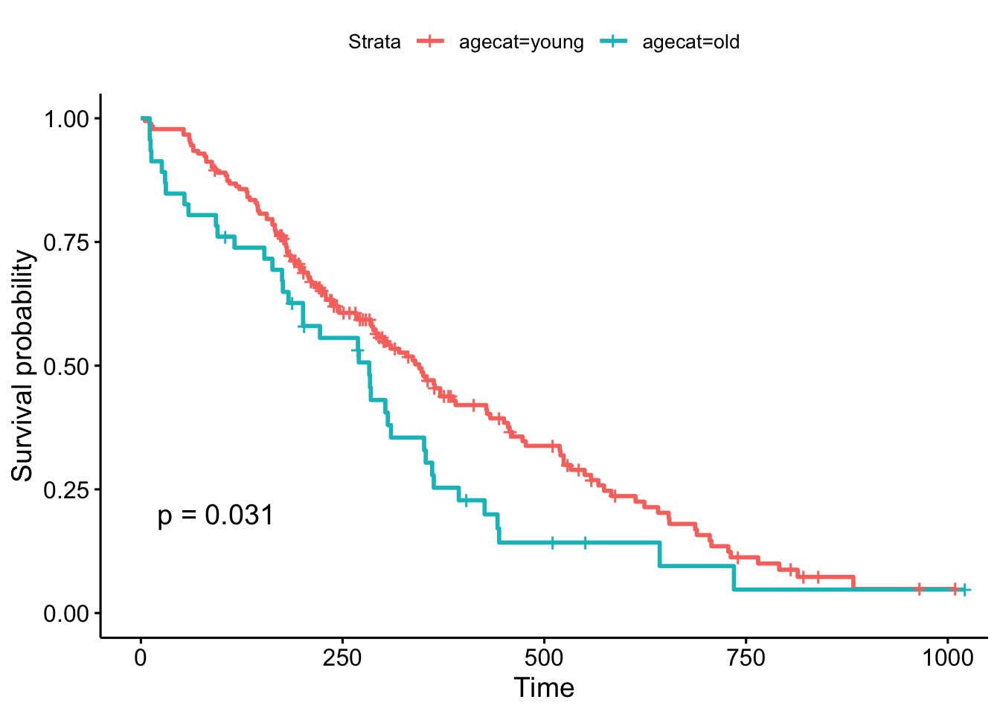
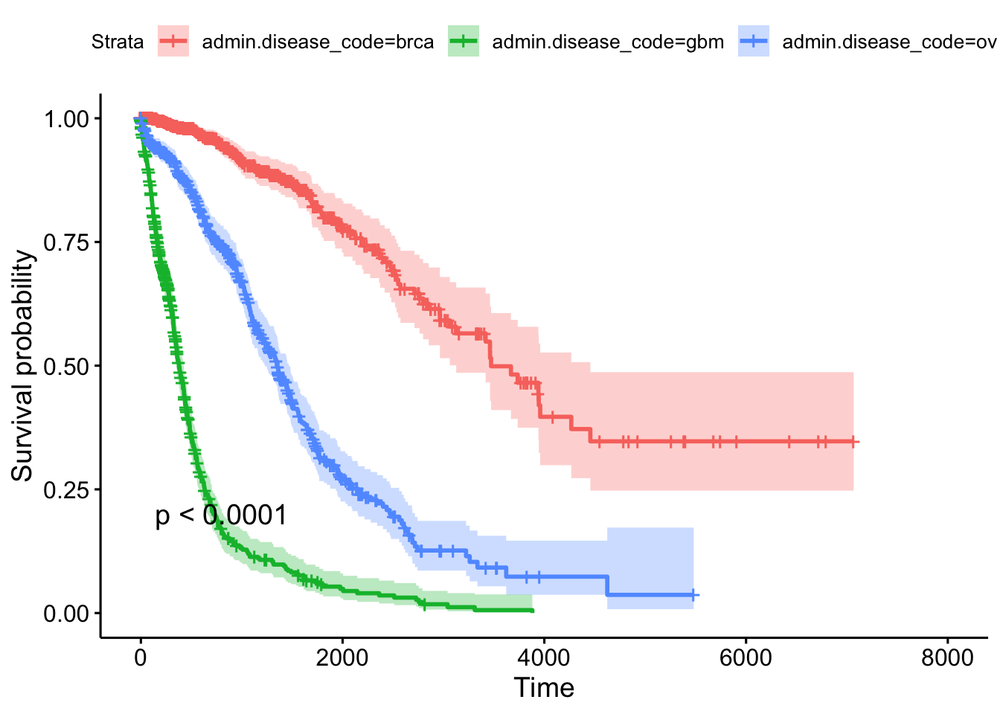
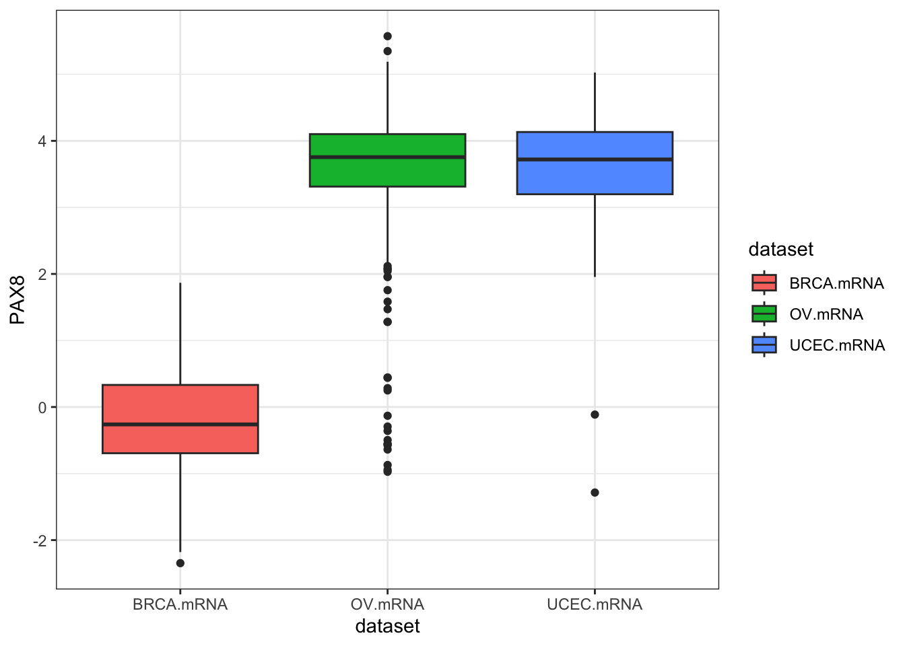
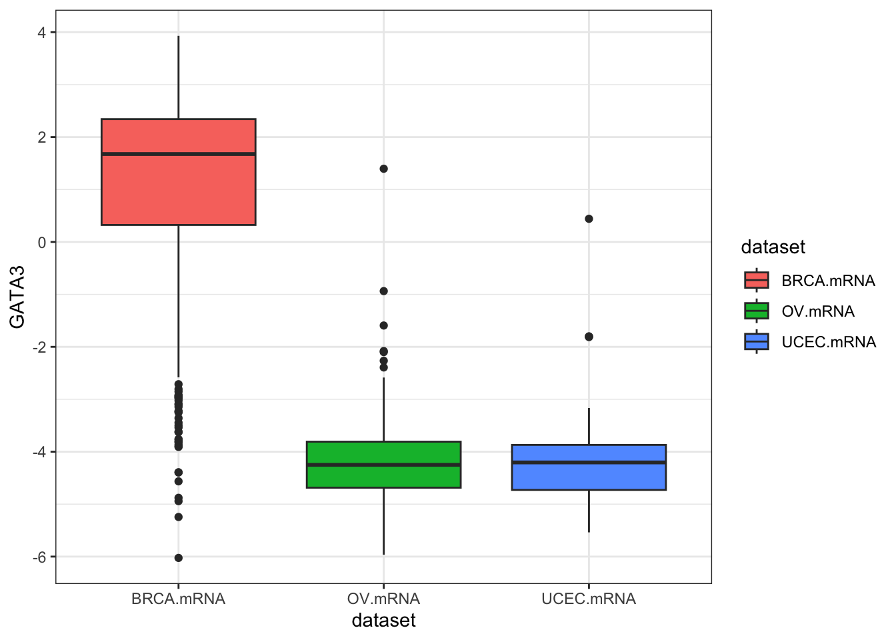
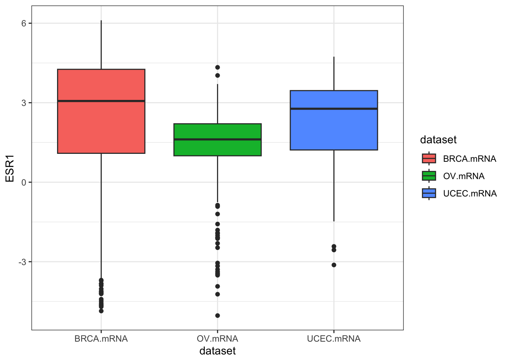
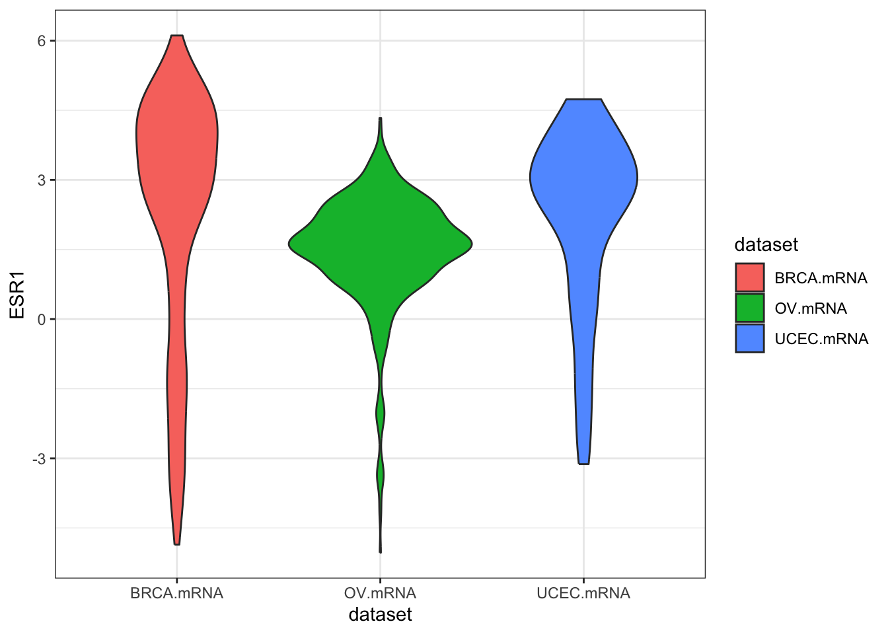

9 Survival Analysis
This chapter will provide hands-on instruction and exercises covering survival analysis using R. Some of the data to be used here will come from The Cancer Genome Atlas (TCGA), where we may also cover programmatic access to TCGA through Bioconductor if time allows.
Handouts: Download and print out these handouts and bring them to class:
9.1 Background
In the chapter on essential statistics (Chapter 8) we covered basic categorical data analysis – comparing proportions (risks, rates, etc) between different groups using a chi-square or fisher exact test, or logistic regression. For example, we looked at how the diabetes rate differed between males and females. In this kind of analysis you implicitly assume that the rates are constant over the period of the study, or as defined by the different groups you defined.
But, in longitudinal studies where you track samples or subjects from one time point (e.g., entry into a study, diagnosis, start of a treatment) until you observe some outcome event (e.g., death, onset of disease, relapse), it doesn’t make sense to assume the rates are constant. For example: the risk of death after heart surgery is highest immediately post-op, decreases as the patient recovers, then rises slowly again as the patient ages. Or, recurrence rate of different cancers varies highly over time, and depends on tumor genetics, treatment, and other environmental factors.
9.1.1 Definitions
Survival analysis lets you analyze the rates of occurrence of events over time, without assuming the rates are constant. Generally, survival analysis lets you model the time until an event occurs,1 or compare the time-to-event between different groups, or how time-to-event correlates with quantitative variables.
The hazard is the instantaneous event (death) rate at a particular time point t. Survival analysis doesn’t assume the hazard is constant over time. The cumulative hazard is the total hazard experienced up to time t.
The survival function, is the probability an individual survives (or, the probability that the event of interest does not occur) up to and including time t. It’s the probability that the event (e.g., death) hasn’t occured yet. It looks like this, where \(T\) is the time of death, and \(Pr(T>t)\) is the probability that the time of death is greater than some time \(t\). \(S\) is a probability, so \(0 \leq S(t) \leq 1\), since survival times are always positive (\(T \geq 0\)).
\[ S(t) = Pr(T>t) \]
The Kaplan-Meier curve illustrates the survival function. It’s a step function illustrating the cumulative survival probability over time. The curve is horizontal over periods where no event occurs, then drops vertically corresponding to a change in the survival function at each time an event occurs.
Censoring is a type of missing data problem unique to survival analysis. This happens when you track the sample/subject through the end of the study and the event never occurs. This could also happen due to the sample/subject dropping out of the study for reasons other than death, or some other loss to followup. The sample is censored in that you only know that the individual survived up to the loss to followup, but you don’t know anything about survival after that.2
Proportional hazards assumption: The main goal of survival analysis is to compare the survival functions in different groups, e.g., leukemia patients as compared to cancer-free controls. If you followed both groups until everyone died, both survival curves would end at 0%, but one group might have survived on average a lot longer than the other group. Survival analysis does this by comparing the hazard at different times over the observation period. Survival analysis doesn’t assume that the hazard is constant, but does assume that the ratio of hazards between groups is constant over time.3 This class does not cover methods to deal with non-proportional hazards, or interactions of covariates with the time to event.
Proportional hazards regression a.k.a. Cox regression is the most common approach to assess the effect of different variables on survival.
9.1.2 Cox PH Model
Kaplan-Meier curves are good for visualizing differences in survival between two categorical groups,4 but they don’t work well for assessing the effect of quantitative variables like age, gene expression, leukocyte count, etc. Cox PH regression can assess the effect of both categorical and continuous variables, and can model the effect of multiple variables at once.5
Cox PH regression models the natural log of the hazard at time t, denoted \(h(t)\), as a function of the baseline hazard (\(h_0(t)\)) (the hazard for an individual where all exposure variables are 0) and multiple exposure variables \(x_1\), \(x_1\), \(...\), \(x_p\). The form of the Cox PH model is:
\[ log(h(t)) = log(h_0(t)) + \beta_1 x_1 + \beta_2 x_2 + ... + \beta_p x_p \]
If you exponentiate both sides of the equation, and limit the right hand side to just a single categorical exposure variable (\(x_1\)) with two groups (\(x_1=1\) for exposed and \(x_1=0\) for unexposed), the equation becomes:
\[ h_1(t) = h_0(t) \times e^{\beta_1 x_1} \]
Rearranging that equation lets you estimate the hazard ratio, comparing the exposed to the unexposed individuals at time t:
\[ HR(t) = \frac{h_1(t)}{h_0(t)} = e^{\beta_1} \]
This model shows that the hazard ratio is \(e^{\beta_1}\), and remains constant over time t (hence the name proportional hazards regression). The \(\beta\) values are the regression coefficients that are estimated from the model, and represent the \(log(Hazard\, Ratio)\) for each unit increase in the corresponding predictor variable. The interpretation of the hazards ratio depends on the measurement scale of the predictor variable, but in simple terms, a positive coefficient indicates worse survival and a negative coefficient indicates better survival for the variable in question.
9.2 Survival analysis in R
The core survival analysis functions are in the survival package. The survival package is one of the few “core” packages that comes bundled with your basic R installation, so you probably didn’t need to install.packages() it. But, you’ll need to load it like any other library when you want to use it. We’ll also be using the dplyr package, so let’s load that too. Finally, we’ll also want to load the survminer package, which provides much nicer Kaplan-Meier plots out-of-the-box than what you get out of base graphics.
The core functions we’ll use out of the survival package include:
-
Surv(): Creates a survival object. -
survfit(): Fits a survival curve using either a formula, of from a previously fitted Cox model. -
coxph(): Fits a Cox proportional hazards regression model.
Other optional functions you might use include:
-
cox.zph(): Tests the proportional hazards assumption of a Cox regression model. -
survdiff(): Tests for differences in survival between two groups using a log-rank / Mantel-Haenszel test.6
Surv() creates the response variable, and typical usage takes the time to event,7 and whether or not the event occured (i.e., death vs censored). survfit() creates a survival curve that you could then display or plot. coxph() implements the regression analysis, and models specified the same way as in regular linear models, but using the coxph() function.
9.2.1 Getting started
We’re going to be using the built-in lung cancer dataset8 that ships with the survival package. You can get some more information about the dataset by running ?lung. The help tells us there are 10 variables in this data:
-
inst: Institution code time: Survival time in daysstatus: censoring status 1=censored, 2=dead-
age: Age in years sex: Male=1 Female=2-
ph.ecog: ECOG performance score (0=good 5=dead) -
ph.karno: Karnofsky performance score as rated by physician -
pat.karno: Karnofsky performance score as rated by patient -
meal.cal: Calories consumed at meals -
wt.loss: Weight loss in last six months
You can access the data just by running lung, as if you had read in a dataset and called it lung. You can operate on it just like any other data frame.
Notice that lung is a plain data.frame object. You could see what it looks like as a tibble (prints nicely, tells you the type of variable each column is). You could then reassign lung to the as_tibble()-ified version.
9.2.2 Survival Curves
Check out the help for ?Surv. This is the main function we’ll use to create the survival object. You can play fast and loose with how you specify the arguments to Surv. The help tells you that when there are two unnamed arguments, they will match time and event in that order. This is the common shorthand you’ll often see for right-censored data. The alternative lets you specify interval data, where you give it the start and end times (time and time2). If you keep reading you’ll see how Surv tries to guess how you’re coding the status variable. It will try to guess whether you’re using 0/1 or 1/2 to represent censored vs “dead”, respectively.9
Try creating a survival object called s, then display it. If you go back and head(lung) the data, you can see how these are related. It’s a special type of vector that tells you both how long the subject was tracked for, and whether or not the event occured or the sample was censored (shown by the +).
[1] "Surv"s [1] 306 455 1010+ 210 883 1022+ 310 361 218 166 170 654
[13] 728 71 567 144 613 707 61 88 301 81 624 371
[25] 394 520 574 118 390 12 473 26 533 107 53 122
[37] 814 965+ 93 731 460 153 433 145 583 95 303 519
[49] 643 765 735 189 53 246 689 65 5 132 687 345
[61] 444 223 175 60 163 65 208 821+ 428 230 840+ 305
[73] 11 132 226 426 705 363 11 176 791 95 196+ 167
[85] 806+ 284 641 147 740+ 163 655 239 88 245 588+ 30
[97] 179 310 477 166 559+ 450 364 107 177 156 529+ 11
[109] 429 351 15 181 283 201 524 13 212 524 288 363
[121] 442 199 550 54 558 207 92 60 551+ 543+ 293 202
[133] 353 511+ 267 511+ 371 387 457 337 201 404+ 222 62
[145] 458+ 356+ 353 163 31 340 229 444+ 315+ 182 156 329
[157] 364+ 291 179 376+ 384+ 268 292+ 142 413+ 266+ 194 320
[169] 181 285 301+ 348 197 382+ 303+ 296+ 180 186 145 269+
[181] 300+ 284+ 350 272+ 292+ 332+ 285 259+ 110 286 270 81
[193] 131 225+ 269 225+ 243+ 279+ 276+ 135
[ reached getOption("max.print") -- omitted 28 entries ]head(lung)# A tibble: 6 × 10
inst time status age sex ph.ecog ph.karno pat.karno meal.cal wt.loss
<dbl> <dbl> <dbl> <dbl> <dbl> <dbl> <dbl> <dbl> <dbl> <dbl>
1 3 306 2 74 1 1 90 100 1175 NA
2 3 455 2 68 1 0 90 90 1225 15
3 3 1010 1 56 1 0 90 90 NA 15
4 5 210 2 57 1 1 90 60 1150 11
5 1 883 2 60 1 0 100 90 NA 0
6 12 1022 1 74 1 1 50 80 513 0Now, let’s fit a survival curve with the survfit() function. See the help for ?survfit. Here we’ll create a simple survival curve that doesn’t consider any different groupings, so we’ll specify just an intercept (e.g., ~1) in the formula that survfit expects. We can do what we just did by “modeling” the survival object s we just created against an intercept only, but from here out, we’ll just do this in one step by nesting the Surv() call within the survfit() call, and similar to how we specify data for linear models with lm(), we’ll use the data= argument to specify which data we’re using. Similarly, we can assign that to another object called sfit (or whatever we wanted to call it).
survfit(s~1)Call: survfit(formula = s ~ 1)
n events median 0.95LCL 0.95UCL
[1,] 228 165 310 285 363Call: survfit(formula = Surv(time, status) ~ 1, data = lung)
n events median 0.95LCL 0.95UCL
[1,] 228 165 310 285 363Call: survfit(formula = Surv(time, status) ~ 1, data = lung)
n events median 0.95LCL 0.95UCL
[1,] 228 165 310 285 363Now, that object itself isn’t very interesting. It’s more interesting to run summary on what it creates. This will show a life table.
summary(sfit)Call: survfit(formula = Surv(time, status) ~ 1, data = lung)
time n.risk n.event survival std.err lower 95% CI upper 95% CI
5 228 1 0.9956 0.00438 0.9871 1.000
11 227 3 0.9825 0.00869 0.9656 1.000
12 224 1 0.9781 0.00970 0.9592 0.997
13 223 2 0.9693 0.01142 0.9472 0.992
15 221 1 0.9649 0.01219 0.9413 0.989
26 220 1 0.9605 0.01290 0.9356 0.986
30 219 1 0.9561 0.01356 0.9299 0.983
31 218 1 0.9518 0.01419 0.9243 0.980
53 217 2 0.9430 0.01536 0.9134 0.974
54 215 1 0.9386 0.01590 0.9079 0.970
59 214 1 0.9342 0.01642 0.9026 0.967
60 213 2 0.9254 0.01740 0.8920 0.960
61 211 1 0.9211 0.01786 0.8867 0.957
62 210 1 0.9167 0.01830 0.8815 0.953
65 209 2 0.9079 0.01915 0.8711 0.946
71 207 1 0.9035 0.01955 0.8660 0.943
79 206 1 0.8991 0.01995 0.8609 0.939
81 205 2 0.8904 0.02069 0.8507 0.932
88 203 2 0.8816 0.02140 0.8406 0.925
92 201 1 0.8772 0.02174 0.8356 0.921
93 199 1 0.8728 0.02207 0.8306 0.917
95 198 2 0.8640 0.02271 0.8206 0.910
105 196 1 0.8596 0.02302 0.8156 0.906
107 194 2 0.8507 0.02362 0.8056 0.898
110 192 1 0.8463 0.02391 0.8007 0.894
116 191 1 0.8418 0.02419 0.7957 0.891
118 190 1 0.8374 0.02446 0.7908 0.887
122 189 1 0.8330 0.02473 0.7859 0.883
[ reached getOption("max.print") -- omitted 111 rows ]These tables show a row for each time point where either the event occured or a sample was censored. It shows the number at risk (number still remaining), and the cumulative survival at that instant.
What’s more interesting though is if we model something besides just an intercept. Let’s fit survival curves separately by sex.
Call: survfit(formula = Surv(time, status) ~ sex, data = lung)
n events median 0.95LCL 0.95UCL
sex=1 138 112 270 212 310
sex=2 90 53 426 348 550summary(sfit)Call: survfit(formula = Surv(time, status) ~ sex, data = lung)
sex=1
time n.risk n.event survival std.err lower 95% CI upper 95% CI
11 138 3 0.9783 0.0124 0.9542 1.000
12 135 1 0.9710 0.0143 0.9434 0.999
13 134 2 0.9565 0.0174 0.9231 0.991
15 132 1 0.9493 0.0187 0.9134 0.987
26 131 1 0.9420 0.0199 0.9038 0.982
30 130 1 0.9348 0.0210 0.8945 0.977
31 129 1 0.9275 0.0221 0.8853 0.972
53 128 2 0.9130 0.0240 0.8672 0.961
54 126 1 0.9058 0.0249 0.8583 0.956
59 125 1 0.8986 0.0257 0.8496 0.950
60 124 1 0.8913 0.0265 0.8409 0.945
65 123 2 0.8768 0.0280 0.8237 0.933
71 121 1 0.8696 0.0287 0.8152 0.928
81 120 1 0.8623 0.0293 0.8067 0.922
88 119 2 0.8478 0.0306 0.7900 0.910
92 117 1 0.8406 0.0312 0.7817 0.904
93 116 1 0.8333 0.0317 0.7734 0.898
95 115 1 0.8261 0.0323 0.7652 0.892
105 114 1 0.8188 0.0328 0.7570 0.886
107 113 1 0.8116 0.0333 0.7489 0.880
110 112 1 0.8043 0.0338 0.7408 0.873
116 111 1 0.7971 0.0342 0.7328 0.867
118 110 1 0.7899 0.0347 0.7247 0.861
131 109 1 0.7826 0.0351 0.7167 0.855
132 108 2 0.7681 0.0359 0.7008 0.842
135 106 1 0.7609 0.0363 0.6929 0.835
142 105 1 0.7536 0.0367 0.6851 0.829
144 104 1 0.7464 0.0370 0.6772 0.823
[ reached getOption("max.print") -- omitted 71 rows ]
sex=2
time n.risk n.event survival std.err lower 95% CI upper 95% CI
5 90 1 0.9889 0.0110 0.9675 1.000
60 89 1 0.9778 0.0155 0.9478 1.000
61 88 1 0.9667 0.0189 0.9303 1.000
62 87 1 0.9556 0.0217 0.9139 0.999
79 86 1 0.9444 0.0241 0.8983 0.993
81 85 1 0.9333 0.0263 0.8832 0.986
95 83 1 0.9221 0.0283 0.8683 0.979
107 81 1 0.9107 0.0301 0.8535 0.972
122 80 1 0.8993 0.0318 0.8390 0.964
145 79 2 0.8766 0.0349 0.8108 0.948
153 77 1 0.8652 0.0362 0.7970 0.939
166 76 1 0.8538 0.0375 0.7834 0.931
167 75 1 0.8424 0.0387 0.7699 0.922
182 71 1 0.8305 0.0399 0.7559 0.913
186 70 1 0.8187 0.0411 0.7420 0.903
194 68 1 0.8066 0.0422 0.7280 0.894
199 67 1 0.7946 0.0432 0.7142 0.884
201 66 2 0.7705 0.0452 0.6869 0.864
208 62 1 0.7581 0.0461 0.6729 0.854
226 59 1 0.7452 0.0471 0.6584 0.843
239 57 1 0.7322 0.0480 0.6438 0.833
245 54 1 0.7186 0.0490 0.6287 0.821
268 51 1 0.7045 0.0501 0.6129 0.810
285 47 1 0.6895 0.0512 0.5962 0.798
293 45 1 0.6742 0.0523 0.5791 0.785
305 43 1 0.6585 0.0534 0.5618 0.772
310 42 1 0.6428 0.0544 0.5447 0.759
340 39 1 0.6264 0.0554 0.5267 0.745
[ reached getOption("max.print") -- omitted 23 rows ]Now, check out the help for ?summary.survfit. You can give the summary() function an option for what times you want to show in the results. Look at the range of followup times in the lung dataset with range(). You can create a sequence of numbers going from one number to another number by increments of yet another number with the seq() function.
# ?summary.survfit
range(lung$time)[1] 5 1022seq(0, 1100, 100) [1] 0 100 200 300 400 500 600 700 800 900 1000 1100And we can use that sequence vector with a summary call on sfit to get life tables at those intervals separately for both males (1) and females (2). From these tables we can start to see that males tend to have worse survival than females.
Call: survfit(formula = Surv(time, status) ~ sex, data = lung)
sex=1
time n.risk n.event survival std.err lower 95% CI upper 95% CI
0 138 0 1.0000 0.0000 1.0000 1.000
100 114 24 0.8261 0.0323 0.7652 0.892
200 78 30 0.6073 0.0417 0.5309 0.695
300 49 20 0.4411 0.0439 0.3629 0.536
400 31 15 0.2977 0.0425 0.2250 0.394
500 20 7 0.2232 0.0402 0.1569 0.318
600 13 7 0.1451 0.0353 0.0900 0.234
700 8 5 0.0893 0.0293 0.0470 0.170
800 6 2 0.0670 0.0259 0.0314 0.143
900 2 2 0.0357 0.0216 0.0109 0.117
1000 2 0 0.0357 0.0216 0.0109 0.117
sex=2
time n.risk n.event survival std.err lower 95% CI upper 95% CI
0 90 0 1.0000 0.0000 1.0000 1.000
100 82 7 0.9221 0.0283 0.8683 0.979
200 66 11 0.7946 0.0432 0.7142 0.884
300 43 9 0.6742 0.0523 0.5791 0.785
400 26 10 0.5089 0.0603 0.4035 0.642
500 21 5 0.4110 0.0626 0.3050 0.554
600 11 3 0.3433 0.0634 0.2390 0.493
700 8 3 0.2496 0.0652 0.1496 0.417
800 2 5 0.0832 0.0499 0.0257 0.270
900 1 0 0.0832 0.0499 0.0257 0.2709.2.3 Kaplan-Meier Plots
Now that we’ve fit a survival curve to the data it’s pretty easy to visualize it with a Kaplan-Meier plot. Create the survival object if you don’t have it yet, and instead of using summary(), use plot() instead.
There are lots of ways to modify the plot produced by base R’s plot() function. You can see more options with the help for ?plot.survfit. We’re not going to go into any more detail here, because there’s another package called survminer that provides a function called ggsurvplot() that makes it much easier to produce publication-ready survival plots, and if you’re familiar with ggplot2 syntax it’s pretty easy to modify. So, let’s load the package and try it out.
library(survminer)
ggsurvplot(sfit)
This plot is substantially more informative by default, just because it automatically color codes the different groups, adds axis labels, and creates and automatic legend. But there’s a lot more you can do pretty easily here. Let’s add confidence intervals, show the p-value for the log-rank test, show a risk table below the plot, and change the colors and the group labels.
ggsurvplot(sfit, conf.int=TRUE, pval=TRUE, risk.table=TRUE,
legend.labs=c("Male", "Female"), legend.title="Sex",
palette=c("dodgerblue2", "orchid2"),
title="Kaplan-Meier Curve for Lung Cancer Survival",
risk.table.height=.15)
9.2.4 Cox Regression
Kaplan-Meier curves are good for visualizing differences in survival between two categorical groups, and the log-rank test you get when you ask for pval=TRUE is useful for asking if there are differences in survival between different groups. But this doesn’t generalize well for assessing the effect of quantitative variables. Just try creating a K-M plot for the nodes variable, which has values that range from 0-33. What a mess! Don’t do this.
ggsurvplot(survfit(Surv(time, status)~nodes, data=colondeath))
At some point using a categorical grouping for K-M plots breaks down, and further, you might want to assess how multiple variables work together to influence survival. For example, you might want to simultaneously examine the effect of race and socioeconomic status, so as to adjust for factors like income, access to care, etc., before concluding that ethnicity influences some outcome.
Cox PH regression can assess the effect of both categorical and continuous variables, and can model the effect of multiple variables at once. The coxph() function uses the same syntax as lm(), glm(), etc. The response variable you create with Surv() goes on the left hand side of the formula, specified with a ~. Explanatory variables go on the right side.
Let’s go back to the lung cancer data and run a Cox regression on sex.
Call:
coxph(formula = Surv(time, status) ~ sex, data = lung)
coef exp(coef) se(coef) z p
sex -0.5 0.6 0.2 -3 0.001
Likelihood ratio test=11 on 1 df, p=0.001
n= 228, number of events= 165 The exp(coef) column contains \(e^{\beta_1}\) (see background section above for more info). This is the hazard ratio – the multiplicative effect of that variable on the hazard rate (for each unit increase in that variable). So, for a categorical variable like sex, going from male (baseline) to female results in approximately ~40% reduction in hazard. You could also flip the sign on the coef column, and take exp(0.531), which you can interpret as being male resulting in a 1.7-fold increase in hazard, or that males die ad approximately 1.7x the rate per unit time as females (females die at 0.588x the rate per unit time as males).
Just remember:
- HR=1: No effect
- HR>1: Increase in hazard
- HR<1: Reduction in hazard (protective)
You’ll also notice there’s a p-value on the sex term, and a p-value on the overall model. That 0.00111 p-value is really close to the p=0.00131 p-value we saw on the Kaplan-Meier plot. That’s because the KM plot is showing the log-rank test p-value. You can get this out of the Cox model with a call to summary(fit). You can directly calculate the log-rank test p-value using survdiff().
summary(fit)Call:
coxph(formula = Surv(time, status) ~ sex, data = lung)
n= 228, number of events= 165
coef exp(coef) se(coef) z Pr(>|z|)
sex -0.531 0.588 0.167 -3.18 0.0015
exp(coef) exp(-coef) lower .95 upper .95
sex 0.588 1.7 0.424 0.816
Concordance= 0.579 (se = 0.021 )
Likelihood ratio test= 10.6 on 1 df, p=0.001
Wald test = 10.1 on 1 df, p=0.001
Score (logrank) test = 10.3 on 1 df, p=0.001Call:
survdiff(formula = Surv(time, status) ~ sex, data = lung)
N Observed Expected (O-E)^2/E (O-E)^2/V
sex=1 138 112 91.6 4.55 10.3
sex=2 90 53 73.4 5.68 10.3
Chisq= 10.3 on 1 degrees of freedom, p= 0.001 Let’s create another model where we analyze all the variables in the dataset! This shows us how all the variables, when considered together, act to influence survival. Some are very strong predictors (sex, ECOG score). Interestingly, the Karnofsky performance score as rated by the physician was marginally significant, while the same score as rated by the patient was not.
Call:
coxph(formula = Surv(time, status) ~ sex + age + ph.ecog + ph.karno +
pat.karno + meal.cal + wt.loss, data = lung)
coef exp(coef) se(coef) z p
sex -6e-01 6e-01 2e-01 -2.7 0.006
age 1e-02 1e+00 1e-02 0.9 0.359
ph.ecog 7e-01 2e+00 2e-01 3.3 0.001
ph.karno 2e-02 1e+00 1e-02 2.0 0.046
pat.karno -1e-02 1e+00 8e-03 -1.5 0.123
meal.cal 3e-05 1e+00 3e-04 0.1 0.898
wt.loss -1e-02 1e+00 8e-03 -1.8 0.065
Likelihood ratio test=28 on 7 df, p=2e-04
n= 168, number of events= 121
(60 observations deleted due to missingness)9.2.5 Categorizing for KM plots
Let’s go back to the lung data and look at a Cox model for age. Looks like age is very slightly significant when modeled as a continuous variable.
Call:
coxph(formula = Surv(time, status) ~ age, data = lung)
coef exp(coef) se(coef) z p
age 0.019 1.019 0.009 2 0.04
Likelihood ratio test=4 on 1 df, p=0.04
n= 228, number of events= 165 Now that your regression analysis shows you that age is marginally significant, let’s make a Kaplan-Meier plot. But, as we saw before, we can’t just do this, because we’ll get a separate curve for every unique value of age!
ggsurvplot(survfit(Surv(time, status)~age, data=lung))One thing you might see here is an attempt to categorize a continuous variable into different groups – tertiles, upper quartile vs lower quartile, a median split, etc – so you can make the KM plot. But, how you make that cut is meaningful! Check out the help for ?cut. cut() takes a continuous variable and some breakpoints and creats a categorical variable from that. Let’s get the average age in the dataset, and plot a histogram showing the distribution of age.
mean(lung$age)
hist(lung$age)
ggplot(lung, aes(age)) + geom_histogram(bins=20)Now, let’s try creating a categorical variable on lung$age with cut pounts at 0, 62 (the mean), and +Infinity (no upper limit). We could continue adding a labels= option here to label the groupings we create, for instance, as “young” and “old”. Finally, we could assign the result of this to a new object in the lung dataset.
[1] (62,Inf] (62,Inf] (0,62] (0,62] (0,62] (62,Inf] (62,Inf] (62,Inf]
[9] (0,62] (0,62] (0,62] (62,Inf] (62,Inf] (0,62] (0,62] (62,Inf]
[17] (62,Inf] (62,Inf] (0,62] (0,62] (62,Inf] (0,62] (0,62] (0,62]
[25] (62,Inf] (62,Inf] (0,62] (62,Inf] (0,62] (62,Inf] (62,Inf] (62,Inf]
[33] (0,62] (0,62] (0,62] (0,62] (62,Inf] (62,Inf] (62,Inf] (62,Inf]
[41] (62,Inf] (62,Inf] (0,62] (0,62] (62,Inf] (62,Inf] (62,Inf] (62,Inf]
[49] (62,Inf] (0,62] (62,Inf] (62,Inf] (62,Inf] (0,62] (0,62] (0,62]
[57] (62,Inf] (0,62] (0,62] (62,Inf] (62,Inf] (0,62] (62,Inf] (62,Inf]
[65] (62,Inf] (62,Inf] (62,Inf] (62,Inf] (62,Inf] (62,Inf] (62,Inf] (0,62]
[73] (62,Inf] (0,62] (0,62] (62,Inf] (0,62] (0,62] (62,Inf] (62,Inf]
[81] (0,62] (0,62] (0,62] (0,62] (0,62] (62,Inf] (0,62] (0,62]
[89] (0,62] (62,Inf] (62,Inf] (62,Inf] (62,Inf] (0,62] (62,Inf] (62,Inf]
[97] (62,Inf] (62,Inf] (62,Inf] (62,Inf] (0,62] (62,Inf] (0,62] (62,Inf]
[105] (0,62] (62,Inf] (0,62] (62,Inf] (0,62] (62,Inf] (62,Inf] (0,62]
[113] (62,Inf] (62,Inf] (0,62] (62,Inf] (0,62] (62,Inf] (62,Inf] (62,Inf]
[121] (62,Inf] (0,62] (62,Inf] (62,Inf] (62,Inf] (62,Inf] (0,62] (62,Inf]
[129] (62,Inf] (0,62] (0,62] (0,62] (0,62] (0,62] (62,Inf] (62,Inf]
[137] (0,62] (0,62] (0,62] (0,62] (62,Inf] (62,Inf] (62,Inf] (62,Inf]
[145] (0,62] (0,62] (62,Inf] (0,62] (62,Inf] (0,62] (62,Inf] (0,62]
[153] (0,62] (0,62] (0,62] (62,Inf] (62,Inf] (0,62] (62,Inf] (0,62]
[161] (0,62] (0,62] (62,Inf] (62,Inf] (62,Inf] (0,62] (0,62] (0,62]
[169] (0,62] (62,Inf] (0,62] (0,62] (0,62] (0,62] (0,62] (0,62]
[177] (0,62] (0,62] (0,62] (62,Inf] (0,62] (0,62] (62,Inf] (62,Inf]
[185] (0,62] (0,62] (62,Inf] (0,62] (62,Inf] (0,62] (62,Inf] (0,62]
[193] (0,62] (62,Inf] (62,Inf] (62,Inf] (62,Inf] (62,Inf] (0,62] (0,62]
[ reached getOption("max.print") -- omitted 28 entries ]
Levels: (0,62] (62,Inf] [1] old old young young young old old old young young young old
[13] old young young old old old young young old young young young
[25] old old young old young old old old young young young young
[37] old old old old old old young young old old old old
[49] old young old old old young young young old young young old
[61] old young old old old old old old old old old young
[73] old young young old young young old old young young young young
[85] young old young young young old old old old young old old
[97] old old old old young old young old young old young old
[109] young old old young old old young old young old old old
[121] old young old old old old young old old young young young
[133] young young old old young young young young old old old old
[145] young young old young old young old young young young young old
[157] old young old young young young old old old young young young
[169] young old young young young young young young young young young old
[181] young young old old young young old young old young old young
[193] young old old old old old young young
[ reached getOption("max.print") -- omitted 28 entries ]
Levels: young old# the base r way:
lung$agecat <- cut(lung$age, breaks=c(0, 62, Inf), labels=c("young", "old"))
# or the dplyr way:
lung <- lung %>%
mutate(agecat=cut(age, breaks=c(0, 62, Inf), labels=c("young", "old")))
head(lung)# A tibble: 6 × 11
inst time status age sex ph.ecog ph.karno pat.karno meal.cal wt.loss
<dbl> <dbl> <dbl> <dbl> <dbl> <dbl> <dbl> <dbl> <dbl> <dbl>
1 3 306 2 74 1 1 90 100 1175 NA
2 3 455 2 68 1 0 90 90 1225 15
3 3 1010 1 56 1 0 90 90 NA 15
4 5 210 2 57 1 1 90 60 1150 11
5 1 883 2 60 1 0 100 90 NA 0
6 12 1022 1 74 1 1 50 80 513 0
# ℹ 1 more variable: agecat <fct>Now, what happens when we make a KM plot with this new categorization? It looks like there’s some differences in the curves between “old” and “young” patients, with older patients having slightly worse survival odds. But at p=.39, the difference in survival between those younger than 62 and older than 62 are not significant.
ggsurvplot(survfit(Surv(time, status)~agecat, data=lung), pval=TRUE)
But, what if we chose a different cut point, say, 70 years old, which is roughly the cutoff for the upper quartile of the age distribution (see ?quantile). The result is now marginally significant!
# the base r way:
lung$agecat <- cut(lung$age, breaks=c(0, 70, Inf), labels=c("young", "old"))
# or the dplyr way:
lung <- lung %>%
mutate(agecat=cut(age, breaks=c(0, 70, Inf), labels=c("young", "old")))
# plot!
ggsurvplot(survfit(Surv(time, status)~agecat, data=lung), pval=TRUE)
Remember, the Cox regression analyzes the continuous variable over the whole range of its distribution, where the log-rank test on the Kaplan-Meier plot can change depending on how you categorize your continuous variable. They’re answering a similar question in a different way: the regression model is asking, “what is the effect of age on survival?”, while the log-rank test and the KM plot is asking, “are there differences in survival between those less than 70 and those greater than 70 years old?”.
(New in survminer 0.2.4: the survminer package can now determine the optimal cutpoint for one or multiple continuous variables at once, using the surv_cutpoint() and surv_categorize() functions. Refer to this blog post for more information.)
9.3 TCGA
The Cancer Genome Atlas (TCGA) is a collaboration between the National Cancer Institute (NCI) and the National Human Genome Research Institute (NHGRI) that collected lots of clinical and genomic data across 33 cancer types. The entire TCGA dataset is over 2 petabytes worth of gene expression, CNV profiling, SNP genotyping, DNA methylation, miRNA profiling, exome sequencing, and other types of data. You can learn more about TCGA at cancergenome.nih.gov. The data is now housed at the Genomic Data Commons Portal. There are lots of ways to access TCGA data without actually downloading and parsing through the data from GDC. We’ll cover more of these below. But first, let’s look at an R package that provides convenient, direct access to TCGA data.
9.3.1 RTCGA
The RTCGA package (bioconductor.org/packages/RTCGA) and all the associated data packages provide convenient access to clinical and genomic data in TCGA. Each of the data packages is a separate package, and must be installed (once) individually.
# Load the bioconductor installer.
# Try http:// if https:// doesn't work.
source("https://bioconductor.org/biocLite.R")
# Install the main RTCGA package
biocLite("RTCGA")
# Install the clinical and mRNA gene expression data packages
biocLite("RTCGA.clinical")
biocLite("RTCGA.mRNA")Let’s load the RTCGA package, and use the infoTCGA() function to get some information about the kind of data available for each cancer type.
9.3.1.1 Survival Analysis with RTCGA Clinical Data
Next, let’s load the RTCGA.clinical package and get a little help about what’s available there.
library(RTCGA.clinical)
?clinicalThis tells us all the clinical datasets available for each cancer type. If we just focus on breast cancer, look at how big the data is! There are 1098 rows by 3703 columns in this data alone. Let’s look at some of the variable names. Be careful with View() here – with so many columns, depending on which version of RStudio you have that may or may not have fixed this issue, Viewing a large dataset like this may lock up your RStudio.
We’re going to use the survivalTCGA() function from the RTCGA package to pull out survival information from the clinical data. It does this by looking at vital status (dead or alive) and creating a times variable that’s either the days to death or the days followed up before being censored. Look at the help for ?survivalTCGA for more info. You give it a list of clinical datasets to pull from, and a character vector of variables to extract. Let’s look at breast cancer, ovarian cancer, and glioblastoma multiforme. Let’s just extract the cancer type (admin.disease_code).
# Create the clinical data
clin <- survivalTCGA(BRCA.clinical, OV.clinical, GBM.clinical,
extract.cols="admin.disease_code")
# Show the first few lines
head(clin) times bcr_patient_barcode patient.vital_status admin.disease_code
379.31.0 3767 TCGA-3C-AAAU 0 brca
379.31.0.1 3801 TCGA-3C-AALI 0 brca
379.31.0.2 1228 TCGA-3C-AALJ 0 brca
379.31.0.3 1217 TCGA-3C-AALK 0 brca
379.31.0.4 158 TCGA-4H-AAAK 0 brca
379.31.0.5 1477 TCGA-5L-AAT0 0 brca# How many samples of each type?
table(clin$admin.disease_code)
brca gbm ov
1098 595 576 # Tabulate by outcome
xtabs(~admin.disease_code+patient.vital_status, data=clin) %>% addmargins() patient.vital_status
admin.disease_code 0 1 Sum
brca 994 104 1098
gbm 149 446 595
ov 279 297 576
Sum 1422 847 2269Now let’s run a Cox PH model against the disease code. By default it’s going to treat breast cancer as the baseline, because alphabetically it’s first. But you can reorder this if you want with factor().
Call:
coxph(formula = Surv(times, patient.vital_status) ~ admin.disease_code,
data = clin)
coef exp(coef) se(coef) z p
admin.disease_codegbm 2.8875 17.9476 0.1129 25.57 <2e-16
admin.disease_codeov 1.5470 4.6973 0.1153 13.42 <2e-16
Likelihood ratio test=904.3 on 2 df, p=< 2.2e-16
n= 2269, number of events= 847 This tells us that compared to the baseline brca group, GBM patients have a ~18x increase in hazards, and ovarian cancer patients have ~5x worse survival. Let’s create a survival curve, visualize it with a Kaplan-Meier plot, and show a table for the first 5 years survival rates.
sfit <- survfit(Surv(times, patient.vital_status)~admin.disease_code, data=clin)
summary(sfit, times=seq(0,365*5,365))Call: survfit(formula = Surv(times, patient.vital_status) ~ admin.disease_code,
data = clin)
admin.disease_code=brca
time n.risk n.event survival std.err lower 95% CI upper 95% CI
0 1096 0 1.000 0.00000 1.000 1.000
365 588 13 0.981 0.00516 0.971 0.992
730 413 11 0.958 0.00851 0.942 0.975
1095 304 20 0.905 0.01413 0.878 0.933
1460 207 9 0.873 0.01719 0.840 0.908
1825 136 14 0.799 0.02474 0.752 0.849
admin.disease_code=gbm
time n.risk n.event survival std.err lower 95% CI upper 95% CI
0 595 2 0.9966 0.00237 0.9920 1.0000
365 224 257 0.5110 0.02229 0.4692 0.5567
730 75 127 0.1998 0.01955 0.1649 0.2420
1095 39 31 0.1135 0.01617 0.0858 0.1500
1460 27 9 0.0854 0.01463 0.0610 0.1195
1825 12 9 0.0534 0.01259 0.0336 0.0847
admin.disease_code=ov
time n.risk n.event survival std.err lower 95% CI upper 95% CI
0 576 0 1.000 0.0000 1.000 1.000
365 411 59 0.888 0.0139 0.861 0.915
730 314 55 0.761 0.0198 0.724 0.801
1095 210 59 0.602 0.0243 0.556 0.651
1460 133 49 0.451 0.0261 0.402 0.505
1825 78 39 0.310 0.0260 0.263 0.365ggsurvplot(sfit, conf.int=TRUE, pval=TRUE)
9.3.1.2 Gene Expression Data
Let’s load the gene expression data.
library(RTCGA.mRNA)
?mRNATake a look at the size of the BRCA.mRNA dataset, show a few rows and columns.
dim(BRCA.mRNA)
BRCA.mRNA[1:5, 1:5]Extra credit assignment: See if you can figure out how to join the gene expression data to the clinical data for any particular cancer type.
# Take the mRNA data
BRCA.mRNA %>%
# then make it a tibble (nice printing while debugging)
as_tibble() %>%
# then get just a few genes
select(bcr_patient_barcode, PAX8, GATA3, ESR1) %>%
# then trim the barcode (see head(clin), and ?substr)
mutate(bcr_patient_barcode = substr(bcr_patient_barcode, 1, 12)) %>%
# then join back to clinical data
inner_join(clin, by="bcr_patient_barcode")Similar to how survivalTCGA() was a nice helper function to pull out survival information from multiple different clinical datasets, expressionsTCGA() can pull out specific gene expression measurements across different cancer types. See the help for ?expressionsTCGA. Let’s pull out data for PAX8, GATA-3, and the estrogen receptor genes from breast, ovarian, and endometrial cancer, and plot the expression of each with a box plot.
library(ggplot2)
expr <- expressionsTCGA(BRCA.mRNA, OV.mRNA, UCEC.mRNA,
extract.cols = c("PAX8", "GATA3", "ESR1"))
head(expr)# A tibble: 6 × 5
bcr_patient_barcode dataset PAX8 GATA3 ESR1
<chr> <chr> <dbl> <dbl> <dbl>
1 TCGA-A1-A0SD-01A-11R-A115-07 BRCA.mRNA -0.542 2.87 3.08
2 TCGA-A1-A0SE-01A-11R-A084-07 BRCA.mRNA -0.595 2.17 2.39
3 TCGA-A1-A0SH-01A-11R-A084-07 BRCA.mRNA 0.500 1.32 0.791
4 TCGA-A1-A0SJ-01A-11R-A084-07 BRCA.mRNA -0.588 1.84 2.50
5 TCGA-A1-A0SK-01A-12R-A084-07 BRCA.mRNA -0.965 -6.03 -4.86
6 TCGA-A1-A0SM-01A-11R-A084-07 BRCA.mRNA 0.573 1.80 2.80 table(expr$dataset)
BRCA.mRNA OV.mRNA UCEC.mRNA
590 561 54 ggplot(expr, aes(dataset, PAX8, fill=dataset)) + geom_boxplot()
ggplot(expr, aes(dataset, GATA3, fill=dataset)) + geom_boxplot()
ggplot(expr, aes(dataset, ESR1, fill=dataset)) + geom_boxplot()
ggplot(expr, aes(dataset, ESR1, fill=dataset)) + geom_violin()
We could also use tidyr to do this all in one go.
9.3.2 Other TCGA Resources
RTCGA isn’t the only resource providing easy access to TCGA data. In fact, it isn’t even the only R/Bioconductor package. Take a look at some of the other resources shown below.
-
TCGAbiolinks: another R package that allows direct query and analysis from the NCI GDC.
- R package: bioconductor.org/packages/TCGAbiolinks
- Paper: Nucleic Acids Research 2015 DOI: 10.1093/nar/gkv1507.
-
cBioPortal: cbioportal.org
- Nice graphical user interface
- Quick/easy summary info on patients, demographics, mutations, copy number alterations, etc.
- Query individual genes, find coexpressed genes
- Survival analysis against different subtypes, expression, CNAs, etc.
-
OncoLnc: oncolnc.org
- Focus on survival analysis and RNA-seq data.
- Simple query interface across all cancers for any mRNA, miRNA, or lncRNA gene (try SERPINA1)
- Precomputed Cox PH regression for every gene, for every cancer
- Kaplan-Meier plots produced on demand
- TANRIC: focus on noncoding RNA
- MEXPRESS: focus on methylation and gene expression
In the medical world, we typically think of survival analysis literally – tracking time until death. But, it’s more general than that – survival analysis models time until an event occurs (any event). This might be death of a biological organism. But it could also be the time until a hardware failure in a mechanical system, time until recovery, time someone remains unemployed after losing a job, time until a ripe tomato is eaten by a grazing deer, time until someone falls asleep in a workshop, etc. Survival analysis also goes by reliability theory in engineering, duration analysis in economics, and event history analysis in sociology.↩︎
This describes the most common type of censoring – right censoring. Left censoring less commonly occurs when the “start” is unknown, such as when an initial diagnosis or exposure time is unknown.↩︎
And, following the definitions above, assumes that the cumulative hazard ratio between two groups remains constant over time.↩︎
And there’s a chi-square-like statistical test for these differences called the log-rank test that compare the survival functions categorical groups.↩︎
See the multiple regression section of the essential statistics section (Chapter 8).↩︎
Cox regression and the logrank test from
survdiffare going to give you similar results most of the time. The log-rank test is asking if survival curves differ significantly between two groups. Cox regression is asking which of many categorical or continuous variables significantly affect survival.↩︎Surv()can also take start and stop times, to account for left censoring. See the help for?Surv.↩︎Loprinzi et al. Prospective evaluation of prognostic variables from patient-completed questionnaires. North Central Cancer Treatment Group. Journal of Clinical Oncology. 12(3):601-7, 1994.↩︎
Where “dead” really refers to the occurance of the event (any event), not necessarily death.↩︎